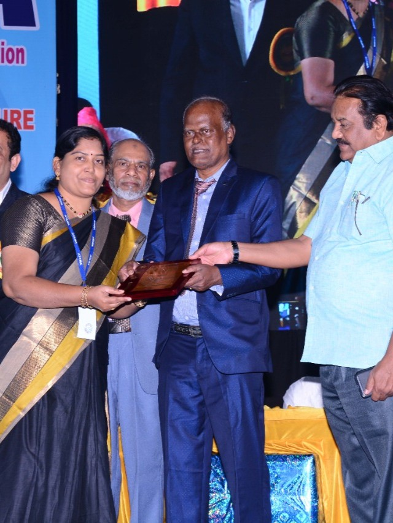
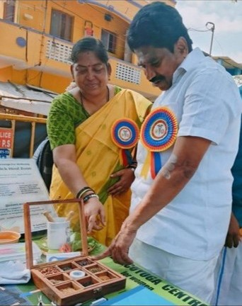
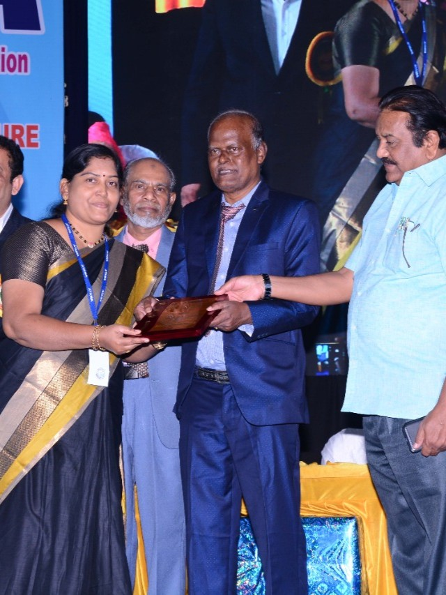
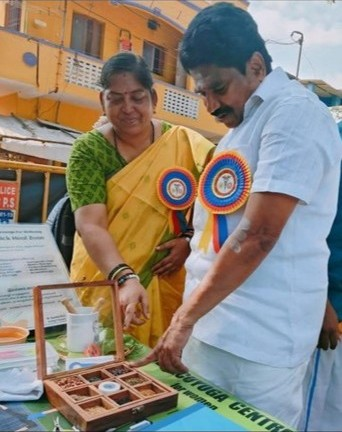

About
Dr. Santhadevi is an accomplished Acupuncturist and Certified Yoga Therapist with over a decade of experience in acupuncture and 15 years in yoga therapy. Her holistic approach blends Traditional Chinese Medicine, restorative yoga, chakra healing, and lifestyle guidance for effective healing in women’s health, pain management, and mental wellness.
- MD (Acupuncture)
- Diploma in Yoga and Human Excellence (DYHE)
- B.Sc (Yoga)
- M.A. (Sociology)
- Certifications: Aromatherapy, Cupping, Flower Medicine, more
- Women’s Health: PCOD, menopause, irregular periods, infertility
- Respiratory & Digestive: Sinusitis, asthma, IBS, kidney stones
- Pain Management: Chronic pain, migraine, headache, BP
- Mental & Cognitive Health: Stress, anxiety, insomnia, ADHD
- Holistic Care: Kids & elderly, therapeutic yoga
Techniques: TCM Acupuncture, Chakra Healing, Restorative Yoga, Pranayama, Dietary Guidance, Counseling, Seed Therapy, Cupping, Acupressure, Mudra, Aromatherapy, Flower Remedy.
Services
- Acupuncture Sessions
- Yoga Therapy (Group & One-on-One)
- Online Consultations / Tele-therapy
- Diet & Lifestyle Counseling
- Health Workshops & Training Bootcamps
- Therapeutic Diet Foods (e.g., Biotin Laddu)
- Chakra Healing
- Cupping Therapy
- Aroma Therapy & Aroma Candles
- Flower Remedy
- Seed Therapy
- Acupressure
- Mudra Practice Guidance
Consultation Fee: ₹500 (1 – 1.5 hours). Follow-up fees vary by therapy and will be communicated directly.
All services available in-person and online.
Awards & Honours
| Year | Award | Details |
|---|---|---|
| 2019 | Best Acupuncturist Award — ATAMA | Outstanding clinical results in acupuncture. |
| 2022 | Lifetime Achievement Award — Amudha Surabi Women’s Trust | For influential articles on AcuYoga and healing techniques. |
| 2023 | Thirukkural Semmal Award — World Thirukural Sadhanai Aalargal Maanadu | For the chapter “Panjaboodhangalil Thirukural” in Thirukural Aayvu Nool. |
| 2024 | Singappen Award — ATAMA | Community service in free acupuncture and wellness initiatives. |
| 2024 | Manidha Neyam Kākum Maruthuvar — Ulaga Sivanadiyar Thirukootam | Treated 136 patients at a camp of 5,000+; covered in newspapers and TV. |
Speaking Engagements & Bootcamps
| Event / Venue | Role | Focus & Audience |
|---|---|---|
| Sristi in Kalaisaaral | Chief Guest & Speaker | Ārogyā Vāzhviyal (Pathways to Health) |
| Nanbargalin Sangamam | Organiser & Speaker | Free medical-awareness camp on traditional therapies |
| Govt. Training Centre for TNPSC | Motivational Speaker | Stress-management for exam aspirants |
| Deepam Lions Club | Guest Speaker | COVID-19 pandemic relief guidance |
| Tiruvannamalai Pengal Inaipu Kuzhu | Speaker & Judge | Food as Medicine talk & millet-cooking competition |
| Tamil Nadu Pengal Inaipu Kuzhu – 29th Annual Conference | Chief Guest | Women’s health awareness keynote |
| Thiruvel Tuition Centre | Bootcamp Facilitator | Pre-board-exam AcuYoga seminar for 10th & 12th students |
| Bodhi Park Coaching Centre | Bootcamp Facilitator | AcuYoga seminar for NEET aspirants |
Publications & Media
| Year | Publication / Platform | Contribution |
|---|---|---|
| 2018 | Vaanga Pesalaam e-Magazine | Profiled for pioneering AcuYoga & women’s health |
| 2018 | Unavu Uzhagam Book | Interview: Healing with Acupressure |
| 2021–22 | Thanga Mangai Magazine | “Thoda Thoda Malarum Viral Nuni Maruthuvam” – wellness columns |
| Various | ATAMA souvenirs, journals, magazines | Regular contributor on acupuncture & wellness |
Community Service
Dr. Santhadevi has conducted numerous free Acupuncture & AcuYoga camps across Tamil Nadu, collectively treating over 1,000 people. She regularly collaborates with NGOs and women’s groups to provide holistic health sessions to underserved communities.
Testimonials
Gallery

 



Wellness Tips
- Practice alternate-nostril breathing for 5 minutes daily to reduce anxiety and enhance focus.
- Add millets and traditional foods to your diet for better digestion and energy.
- Apply gentle acupressure at the Hegu point (between thumb and index finger) for headache relief.
- Evening restorative yoga postures help improve sleep quality.
- Stay hydrated and maintain a regular sleep routine for natural hormone balance.
Contact & Appointment
WhatsApp / Call: +91 95662 37985
Email: santhadevibr@gmail.com
Location: Porur, Chennai
Consultation: In-person and Online
Google Maps: View Location